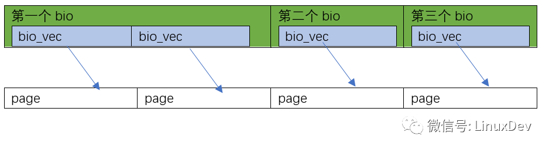

概述
- 本篇汇总块 IO 层知识
- 块 IO 层即下图中的Block IO Layer
从图中可以看出，对于磁盘的一次读请求，首先经过虚拟文件系统（VFS），其次是页高速缓存（page cache），接下来是映射层（mapping layer，是具体的文件系统如 ext4）、通用块层（generic block layer）、IO 调度程序（I/O scheduler，也叫 elevator）、块设备驱动（block device driver），最后是物理块设备（block device）。
下面简要概括一个块设备 I/O 操作的执行过程：
- 系统调用(如 read())的服务例程调用适当的 VFS 函数。
- VFS 函数确定所请求的数据是否已经存在，若数据存在于内存的页高速缓存中，则直接读内存；否则进入下一步。
- 内核需要从块设备读数据，通过映射层确定数据的物理位置。
- 现在内核可以向通用块层提交请求，启动 I/O 操作来传送所请求的数据。一般而言，每个 I/O 操作只针对磁盘上一组连续的块。由于请求的数据不必位于相邻的块中，所以通用块层可能启动几次 I/O 操作。每次 I/O 操作由一个“块 I/O”(简称“bio”)结构描述，它收集底层组件需要的所有信息以满足所发出的请求。
- 通用块层下面的 I/O 调度程序根据预先定义的内核策略，将待处理的 I/O 操作（bio）映射成一个 I/O 请求（request）并插入到块设备的请求队列(request queue)中，或将一个 I/O 操作合并到队列中已有的、且物理介质上相邻的请求中。
- 激活的块设备驱动程序调用策略例程(strategy routine)选择一个待处理的请求，并向磁盘控制器的硬件接口发送适当的命令，来进行实际的数据传送。
-
当 I/O 操作终止时，磁盘控制器就产生一个中断，如果需要，相应的中断程序再调用策略例程去处理队列中的另一个请求。
-
有意思的总结, Block IO Layer 分为 2 层: Generic Block Device Layer和I/O Scheduler Layer, 这两层分别可以简称为BIO 层和电梯层
一 BIO 层
Generic Block Device Layer 基础
- 参考《本章 第 7 篇》, Genral Block Device Layer 基础 其实就是 block_device、gendisk、hd_struct 三个核心结构体及其组成的子系统
1 request 结构体
- 每个块设备的待处理请求都是用一个结构体 request 表示的:
struct request {
struct list_head queuelist; /* 用于挂在请求队列链表的节点，只能使用函数blkdev_dequeue_request访问，不能直接访问 */
struct list_head donelist; /* 用于挂在已完成请求链表的节点 */
struct request_queue *q; /* 指向请求队列的指针 */
unsigned int cmd_flags; /* 命令标识 */
enum rq_cmd_type_bits cmd_type; /* 命令类型 */
/* 各种各样的扇区计数: */
/* 为提交I/O维护bio横断面的状态信息，其中hard_*成员是通用块层内部更新的，驱动程序不应该修改 */
sector_t sector; /* 要传送的下一个扇区号 */
sector_t hard_sector; /* 要传送的下一个扇区号 */
unsigned long nr_sectors; /* 整个请求还需要传送的扇区数 */
unsigned long hard_nr_sectors; /* 整个请求中还需要传送的扇区数 */
unsigned int current_nr_sectors; /* 当前bio的当前段中还需要传送的扇区数 */
unsigned int hard_cur_sectors; /* 当前bio的当前段中还需要传送的扇区数 */
struct bio *bio; /* 请求中第一个未完成传送操作的bio */
struct bio *biotail; /* 请求链表中末尾的bio */
struct hlist_node hash; /* 链入一个哈希表(用来查找与新bio相邻的请求) */
/* rb_node仅用在I/O调度器中把请求放到一棵红黑树上，当请求被移到分发队列中时，请求将被删除。 */
/* 因此，completion_data(用于给底层驱动保存一些额外的信息)可与rb_node分享空间 */
union {
struct rb_node rb_node; /* 排序/查找 */
void *completion_data;
};
struct gendisk *rq_disk; /* 请求所引用的磁盘 */
struct hd_struct *part; /* 请求所引用的分区 */
unsigned long start_time; /* 请求进入队列的时间(用jiffies表示) */
unsigned int timeout; /* 请求的超时 */
int retries;
rq_end_io_fn *end_io; /* 请求完成时的回调函数 */
void *end_io_data;
// ...
};
- 每个请求(request)包含一个或多个 bio 结构.
- 最初, 通用块层创建一个仅包含一个 bio 结构的请求.
- 然后 I/O 调度程序可能向初始的 bio 中增加一个新段, 也可能将另一个 bio 结构链接到请求中(当新数据与请求中已存在的数据物理相邻), 从而扩展该请求.
-
request 结构体中的 bio 字段指向请求中的第一个 bio 结构, 而 biotail 字段指向最后一个 bio 结构.
-
一个 request 实例中的几个成员字段值可能是动态变化的.
-
- 例如一旦 bio 中引用的数据块全部传送完毕,
-
- bio 字段立即更新从而指向请求链表中的下一个 bio.
-
- 在此期间新的 bio 可能被加入到请求链表的尾部, 所以 biotail 的指向也可能改变.
1.1 request 结构体和 bio 结构体关系
1.2 gendisk 结构体、request_quque 结构体、request 结构体、bio 结构体
2 bio 结构体和写磁盘的整体过程
- 首先 submit_bh()函数，其作用：根据缓冲区首部的内容创建一个 bio，在该函数中通过 buffer_head 传进来的信息对 bio 的信息赋值。如下
bio->bi_sector = bh->b_blocknr * (bh->b_size >> 9); //扇区号
bio->bi_bdev = bh->b_bdev; //设备，如分区
bio->bi_io_vec[0].bv_page = bh->b_page; //对应页
bio->bi_io_vec[0].bv_len = bh->b_size; //块大小
bio->bi_io_vec[0].bv_offset = bh_offset(bh); //buffer_head指向的缓存区相对于其所在页的偏移
3 bio 结构体和 bio_vec 结构体关系:
- bio 和 bio_vec 的关系可以参考文件读写（BIO）波澜壮阔的一生, 如下图:
- bio 的定义如下(include/linux/blk_types.h)
struct bio_vec {
struct page *bv_page; /* 指向这个内存缓冲区所在的物理页面 */
unsigned int bv_len; /* 内存缓冲区大小(字节) */
unsigned int bv_offset; /* 缓冲区在该物理页面上的偏移量(字节) */
};
struct bio {
struct bio *bi_next; /* 请求队列中的下一个bio */
struct block_device *bi_bdev; /* 相关的块设备 */
sector_t bi_sector; /* 需要传输的第一个扇区号(磁盘中的位置) */
struct bvec_iter bi_iter;
unsigned long bi_flags; /* bio标志位 */
unsigned long bi_rw; /* I/O操作类型及优先级 */
unsigned short bi_vcnt; /* bio_vec数组中段的数目 */
unsigned short bi_idx; /* bio_vec数组中段的当前索引值 */
/* Number of segments in this BIO after
* physical address coalescing is performed.
*/
unsigned int bi_phys_segments; /* 结合后的片段数 */
unsigned int bi_size; /* 剩余的I/O数量 */
bio_end_io_t *bi_end_io;
void *bi_private;
atomic_t bi_cnt; /* pin count bio的引用计数器 */
struct bio_vec *bi_io_vec; /* the actual vec list */
};
- BIO 结构体其中最重要的几个成员变量是 bi_io_vecs、 bi_vcnt 和 bi_idx。
-
- bi_io_vecs 指向一个 bio_vec 结构体数组，该结构体数组包含了一个特定 I/O 操作所需要使用到的所有段（segment）。
-
- 每个 bio_vec 结构都是一个向量，它描述的是一个特定的段：段所在的物理页、块在物理页中的偏移量、从给定偏移量开始的块长度。
-
- 整个 bio_io_vec 结构体数组表示了一个完整的缓冲区。即使一个缓冲区分散在内存的多个位置上，bio 结构体也能对内核保证 I/O 操作的执行，这样的就叫做向量 I/O（vectored I/O，或 scatter/gather I/O）。
它是一个描述硬盘里面的位置与 page cache 的页对应关系的数据结构，每个 bio 对应的硬盘里面一块连续的位置，每一块硬盘里面连续的位置，可能对应着 page cache 的多页或者一页，所以它里面会有一个 bio_vec *bi_io_vec 数组(可以理解为一个 bio_vec 数组, 数组是用首元素地址表示的, 所以这里指针指向首元素即可)
在每个给定的块设备 I/O 操作中，bi_vcnt 域用来描述 bi_io_vec 所指向的 bio_vec 数组中的向量数目。当通用块层开始执行请求，需要使用各个片段时，bi_idx 就会不断更新，总是指向当前片段。 通用块层通过它可以跟踪块设备 I/O 操作的完成进度。
bio 作为通用块层的主要数据结构，既描述了操作磁盘的位置(bi_sector)，又描述了内存的位置(bi_io_vec)，是上层内核 vfs 与下层驱动的连接纽带。
我们现在假设 3 种情况
- 第 1 种情况是 page_cache_sync_readahead()要读的 0~16KB 数据，在硬盘里面正好是顺序排列的(是否顺序排列，要查文件系统，如 ext3、ext4)，Linux 会为这一次 4 页的读，分配 1 个 bio 就足够了，并且让这个 bio 里面分配 4 个 bi_io_vec，指向 4 个不同的内存页：

- 第 2 种情况是 page_cache_sync_readahead()要读的 0~16KB 数据，在硬盘里面正好是完全不连续的 4 块 (是否顺序排列，要查文件系统，如 ext3、ext4)，Linux 会为这一次 4 页的读，分配 4 个 bio，并且让这 4 个 bio 里面，每个分配 1 个 bi_io_vec，指向 4 个不同的内存页面：

- 当然你还可以有第 3 种情况，比如 0~8KB 在硬盘里面连续，8~16KB 不连续，那可以是这样的:

4 I/O 请求队列: request_queue
- 请求队列由一个大的结构体 request_queue 表示:
struct request_queue
{
/*
* Together with queue_head for cacheline sharing
*/
struct list_head queue_head;
struct request *last_merge;
struct elevator_queue *elevator;
/*
* the queue request freelist, one for reads and one for writes
*/
struct request_list rq; /* 请求结构体的freelist */
/* 不同情况下执行的回调方法： */
request_fn_proc *request_fn;
make_request_fn *make_request_fn;
prep_rq_fn *prep_rq_fn;
unprep_rq_fn *unprep_rq_fn;
merge_bvec_fn *merge_bvec_fn;
softirq_done_fn *softirq_done_fn;
rq_timed_out_fn *rq_timed_out_fn;
dma_drain_needed_fn *dma_drain_needed;
lld_busy_fn *lld_busy_fn;
// ...
};
- 请求队列（request_queue）实质上是一个双向链表，每个元素是一个请求(request 结构体).
- request_queue 结构体中的 queue_head 成员存放链表的头。
- 结构体成员 make_request_fn 为 I/O 请求创建一个 request 结构体，然后把交给 I/O 调度程序。
- I/O 调度程序提供了几种预先定义好的元素排序方式（调度算法），后续会详细展开说明。
-
而成员 request_fn 存放来自设备驱动程序的请求处理函数。
-
每个请求队列都有一个允许处理的最大请求数，request_queue 的 nr_requests 字段存放了每个数据传送方向所允许的最大请求数（默认读写队列的最大请求数都是 128 个）。
- 如果待处理的读/写请求数超过了允许的最大值，那么队列会被标志已满，需要把请求加入到某个传送方向的可阻塞进程被放置到 request_list 结构所对应的等待队列中睡眠。
二 电梯层
1 核心数据结构
1.1 struct elevator_queue
include/linux/elevator.h
/*
* each queue has an elevator_queue associated with it
*/
struct elevator_queue
{
struct elevator_type *type;
void *elevator_data;
struct kobject kobj;
struct mutex sysfs_lock;
unsigned int registered:1;
DECLARE_HASHTABLE(hash, ELV_HASH_BITS);
};
1.2 struct elevator_type
/*
* identifies an elevator type, such as AS or deadline
*/
struct elevator_type
{
/* managed by elevator core */
struct kmem_cache *icq_cache;
/* fields provided by elevator implementation */
struct elevator_ops ops;
size_t icq_size; /* see iocontext.h */
size_t icq_align; /* ditto */
struct elv_fs_entry *elevator_attrs;
char elevator_name[ELV_NAME_MAX];
struct module *elevator_owner;
/* managed by elevator core */
char icq_cache_name[ELV_NAME_MAX + 5]; /* elvname + "_io_cq" */
struct list_head list;
};
1.3 struct elevator_ops
struct elevator_ops
{
elevator_merge_fn *elevator_merge_fn;
elevator_merged_fn *elevator_merged_fn;
elevator_merge_req_fn *elevator_merge_req_fn;
elevator_allow_merge_fn *elevator_allow_merge_fn;
elevator_bio_merged_fn *elevator_bio_merged_fn;
elevator_dispatch_fn *elevator_dispatch_fn;
elevator_add_req_fn *elevator_add_req_fn;
elevator_activate_req_fn *elevator_activate_req_fn;
elevator_deactivate_req_fn *elevator_deactivate_req_fn;
elevator_completed_req_fn *elevator_completed_req_fn;
elevator_request_list_fn *elevator_former_req_fn;
elevator_request_list_fn *elevator_latter_req_fn;
elevator_init_icq_fn *elevator_init_icq_fn; /* see iocontext.h */
elevator_exit_icq_fn *elevator_exit_icq_fn; /* ditto */
elevator_set_req_fn *elevator_set_req_fn;
elevator_put_req_fn *elevator_put_req_fn;
elevator_may_queue_fn *elevator_may_queue_fn;
elevator_init_fn *elevator_init_fn;
elevator_exit_fn *elevator_exit_fn;
};
1.4 struct request_queue
include/linux/blkdev.h
struct request_queue {
/*
* Together with queue_head for cacheline sharing
*/
struct list_head queue_head;
struct request *last_merge;
struct elevator_queue *elevator;
int nr_rqs[2]; /* # allocated [a]sync rqs */
int nr_rqs_elvpriv; /* # allocated rqs w/ elvpriv */
/*
* If blkcg is not used, @q->root_rl serves all requests. If blkcg
* is used, root blkg allocates from @q->root_rl and all other
* blkgs from their own blkg->rl. Which one to use should be
* determined using bio_request_list().
*/
struct request_list root_rl;
request_fn_proc *request_fn;
make_request_fn *make_request_fn;
prep_rq_fn *prep_rq_fn;
unprep_rq_fn *unprep_rq_fn;
merge_bvec_fn *merge_bvec_fn;
softirq_done_fn *softirq_done_fn;
rq_timed_out_fn *rq_timed_out_fn;
dma_drain_needed_fn *dma_drain_needed;
lld_busy_fn *lld_busy_fn;
struct blk_mq_ops *mq_ops;
unsigned int *mq_map;
/*省略*/
}
2 I/O 调度算法结构体和向内核注册
-
I/O 调度层通过 elevator_ops 结构体来适配不同的 I/O 调度算法，这个结构体定义了一系列的接口。不同的 I/O 调度算法只需要实现这些接口，然后注册到 I/O 调度层后，即可被 I/O 调度层识别。
-
elevator_ops 结构体定义如下：
struct elevator_ops
{
elevator_merge_fn *elevator_merge_fn;
elevator_merged_fn *elevator_merged_fn;
...
elevator_dispatch_fn *elevator_dispatch_fn;
elevator_add_req_fn *elevator_add_req_fn;
...
};
-
elevator_ops 结构定义了很多接口，但 I/O 调度算法只需要按需实现其中部分重要的接口即可。
-
下面我们来介绍一下 elevator_ops 结构几个重要接口的作用：
-
elevator_merge_fn：用于判断新提交的 I/O 请求是否能够与 I/O 调度器中的请求进行合并。
-
elevator_merged_fn：用于对合并后的 I/O 请求进行重新排序。
-
elevator_dispatch_fn：用于将 I/O 调度器中的 I/O 请求分发给块设备驱动层。
-
elevator_add_req_fn：用于向 I/O 调度器添加新的 I/O 请求。 由于内核支持多种 I/O 调度算法，所以内核通过链表把所有的 I/O 调度算法连接起来。如果用户编写了新的 I/O 调度算法，可以使用elv_register()函数将其注册到内核中。
2.1 电梯排序
-
当各个进程本地的 plug list 里面的 request 被泄洪，以排山倒海之势进入的，不是最终的设备驱动（不会直接被拍死在沙滩上的）,而是一个电梯排队算法，进行再一次的排队。这个电梯调度，其实目的 3 个：
-
- 进一步的合并 request
-
- 把 request 对硬盘的访问变得顺序化
-
- 执行 QoS
-
电梯的内部实现可以非常灵活，但是入口是
elevator_add_req_fn()，出口是elevator_dispatch_fn()。
2.2 bio 和 request 的三进三出
- bio代表正在执行的 IO 操作.
- 用于描述硬盘里面要真实操作的位置与 page cache 的页映射关系的数据结构是 bio.
A 原地蓄势
-
把 bio 转化为 request，把 request 放入进程本地的 plug 队列；蓄势多个 request 后，再进行泄洪。
-
- 1 形成 bio 结构体时, 按照 bio_vec 数组的连续情况分配 bio 结构体数目, 比如全连续那么就分配一个 bio 结构体, 比如全都不连续则分配和 bio_vec 数组相同数量的 bio 结构体数目
-
- 2 形成 request, 按照硬盘块的连续情况, 把 bio 形成本地进程的 request 队列
B 电梯排序
- 进程本地的 plug 队列的 request 进入到电梯，内核对所有进程提交过来的 request 进行再次的合并、排序，执行 QoS 的排队，之后按照 QoS 的结果，分发给块设备驱动。电梯内部的实现，可以有各种各样的队列。
C 分发执行
- 最终提交给设备驱动程序，执行 request。 电梯分发的 request，被设备驱动的 request_fn()挨个取出来，派发真正的硬件读写命令到硬盘。这个分发的队列，一般就是我们在块设备驱动里面见到的 request_queue 了。
三 链路
1 从 vfs 到 bio 层核心代码:
sys_read -> vfs_read--->ext4_file_read_iter--->generic_file_read_iter(page cache) --->do_generic_file_read(在do_generic_file_read函数中调用page = find_get_page(mapping, index);)
如果没有找到page，则
if (!page) {
/* 如果page不在当前cache中，进行预读操作*/
page_cache_sync_readahead(mapping, ra, filp, index, last_index - index);
page = find_get_page(mapping, index);
if (unlikely(page == NULL))
goto no_cached_page;
}
fs/read_write.c
ssize_t vfs_read(struct file *file, char __user *buf, size_t count, loff_t *pos)
{
ssize_t ret;
if (!(file->f_mode & FMODE_READ))
return -EBADF;
if (!(file->f_mode & FMODE_CAN_READ))
return -EINVAL;
if (unlikely(!access_ok(VERIFY_WRITE, buf, count)))
return -EFAULT;
ret = rw_verify_area(READ, file, pos, count);
if (ret >= 0) {
count = ret;
if (file->f_op->read)
ret = file->f_op->read(file, buf, count, pos);
else if (file->f_op->aio_read)
ret = do_sync_read(file, buf, count, pos);
else
ret = new_sync_read(file, buf, count, pos);
if (ret > 0) {
fsnotify_access(file);
add_rchar(current, ret);
}
inc_syscr(current);
}
return ret;
}
EXPORT_SYMBOL(vfs_read);
-
以 ext4 文件系统为例(fs/ext4/file.c),file->f_op->read(file, buf, count, pos) 具体函数为
-
重点是 page_cache_sync_readahead()这个函数
page_cache_sync_readahead()-->进行预读-->ondemand_readahead-->__do_page_cache_readahead-->read_pages-->
ret = mapping->a_ops->readpages(filp, mapping, pages, nr_pages);--> 这一步其实是具体文件系统的readpages方法，对于ext4来说就是ext4_readpages函数-->ext4_readpages调用ext4_mpage_readpages-->在ext4_mpage_readpages中，会构造一个bio-->ext4_submit_bio_read--> 调用通用方法submit_bio(bio)
-
最终具体文件系统 ext4 这里执行了 submit_bio，submit_bio 执行了 generic_make_request
-
generic_make_request 函数
-
在 generic_make_request 中会向 bio 层申请 request 请求,内核调用 generic_make_request()函数，该函数是通用块层的主要入口点
blk_qc_t generic_make_request(struct bio *bio)
{
if (current->bio_list) {
bio_list_add(¤t->bio_list[0], bio);
goto out;
}
bio_list_init(&bio_list_on_stack[0]);
current->bio_list = bio_list_on_stack;
do {
struct request_queue *q = bdev_get_queue(bio->bi_bdev);
if (likely(blk_queue_enter(q, false) == 0)) {
struct bio_list lower, same;
/* Create a fresh bio_list for all subordinate requests */
bio_list_on_stack[1] = bio_list_on_stack[0];
bio_list_init(&bio_list_on_stack[0]);
ret = q->make_request_fn(q, bio);
} else {
bio_io_error(bio);
}
bio = bio_list_pop(&bio_list_on_stack[0]);
} while (bio);
current->bio_list = NULL; /* deactivate */
}
- 调用 queue 的 request_fn 方法把 request 提交给磁盘驱动进行真正的处理。
总结
- 默认是走 PageCache, PageCache 和文件系统交互层函数:
- 文件系统(ext4)和 BIO 层交互函数:
submit_bio() - BIO 层开始函数 generic_make_request, generic_make_request 调用 q->make_request_fn(q, bio)放入 gendisk 的队列
- BIO 层到电梯层交互函数: 待定
-
电梯层到驱动层的交互函数：就是 request_queue 的 request_fn 成员(q->request_fn = scsi_request_fn;)
-
做一个最最简短的总结:
ext4构造bio请求--> 调用submit_bio函数-->generic_make_request调用q->make_request_fn(q, bio)放入队列--> 经过一系列电梯排序-->然后调用q->request_fn = scsi_request_fn; 真正下发给磁盘
- 两处史诗级函数
-
- 1 构造 bio 请求的 mpage_readpages()系列函数，以 ext4 文件系统为例就是 ext4_mpage_readpages,在 ext4_mpage_readpages 中，会构造一个 bio
-
- 2 将 bio 转化为 request 的史诗级函数,这个完成“造请求”的史诗级的函数，一般是
void blk_queue_bio(struct request_queue *q, struct bio *bio)，位于 block/blk-core.c。
- 2 将 bio 转化为 request 的史诗级函数,这个完成“造请求”的史诗级的函数，一般是
-
submit_bio 是块层的统一接口函数，bio 是统一 IO 结构体
- request 是块层内部的 IO 请求的结构体，bio 到 request 有一层转换，这层转换就是排序、合并的时候；
- make_request_fn 就是 bio 转换成 request 的时机，IO 的排序、合并时机就在于此；
- request_fn 是 request 派发的时机，IO 的调度算法也在此发挥作用。从 request 队列中按照策略选一个 req 出来，封装成底层想要的样子，下发下去
- IO 调度器合并、排序，包括按照电梯直上直下派发请求的目的是减少磁盘寻址时间，从而提高整体性能；
-
- noop，cfq，deadline 三种派发请求的算法都有适用自己的场景。- - noop 是几乎 bypass 请求，没有重拍、合并。deadline 是电梯算法衍生了一下。cfq 是全新的一种公平算法，跟电梯没啥关系；
- 块层最核心的逻辑是：bio 请求怎么入队，request 请求怎么出队而已，它远比文件系统要简单；